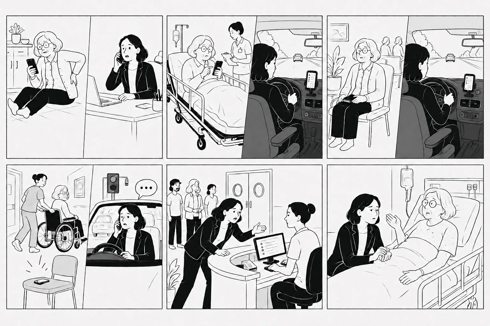
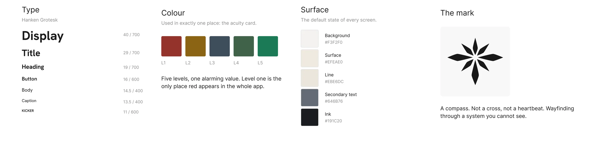
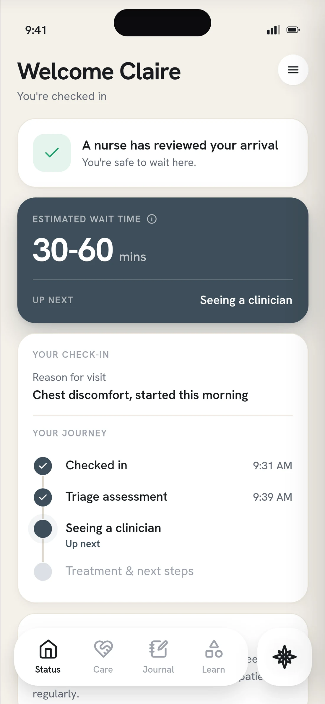
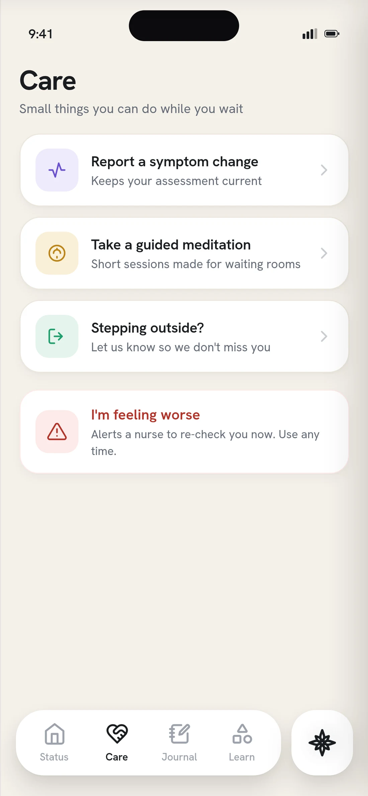
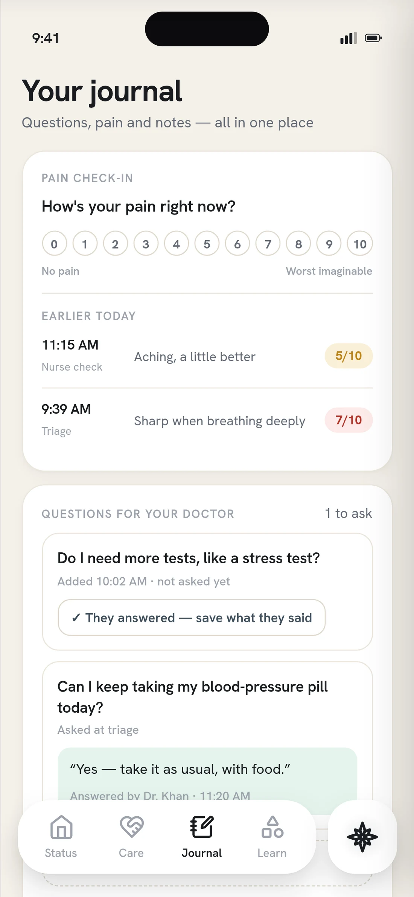
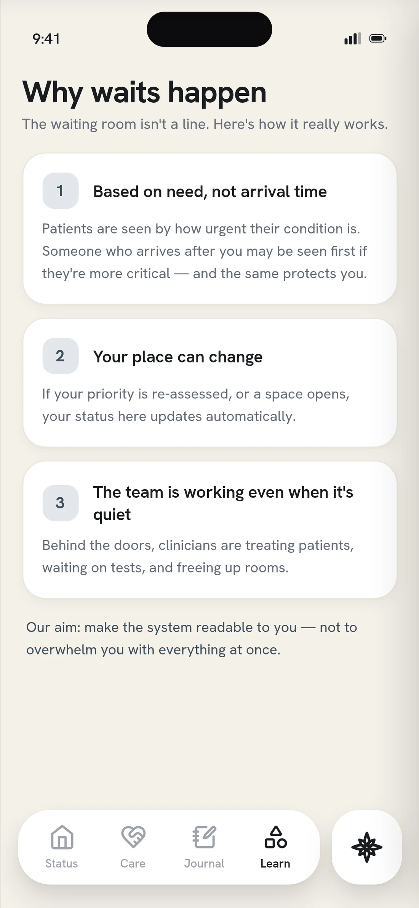
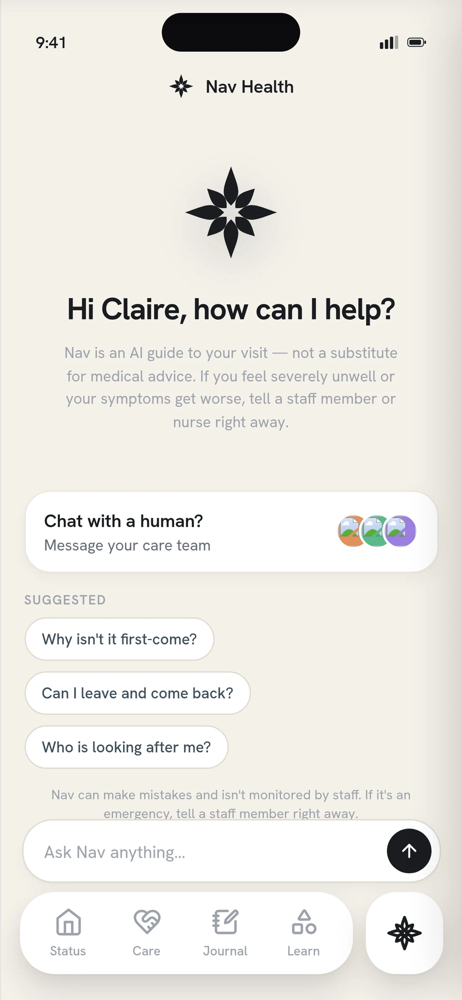
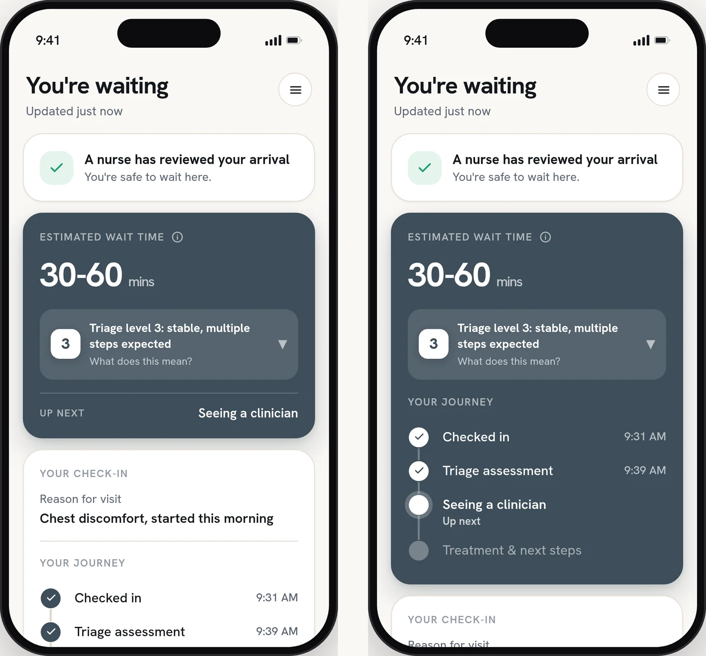
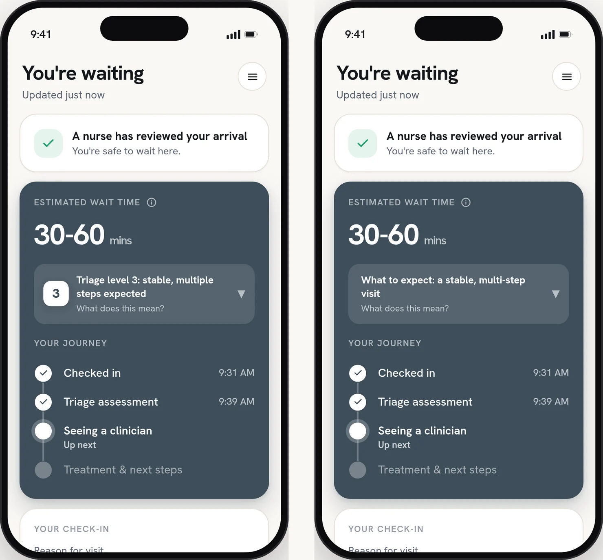
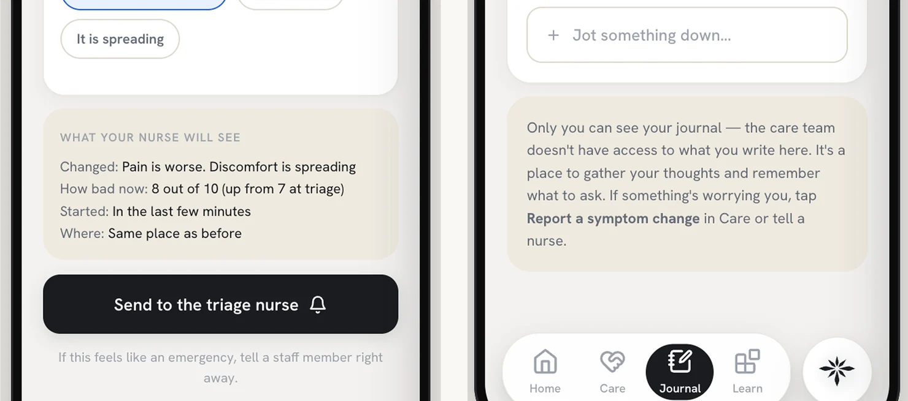

01Margaret
74 · walk-in, with an advocate
Arrives after a fall, with a daughter across town driving without being in the know.
What it stress-testsThe need to be able to share updates with loved ones.
Nav Health is a digital companion for the emergency room. It tells the patient where they stand, what their triage level actually means, what happens next, and roughly when, in plain language. Not a promise about the clock. A position inside a system they otherwise cannot see.
Concept work, never run in a live department. Underneath it: sixteen survey responses, two A/B studies of seven and five, four rounds of usability testing, and one emergency nurse who read every screen. Mostly not the people this is for, and every number below says so.
How do you tell someone where they stand, when the honest answer is a number that would mean nothing to them?
The median wait to see a provider is sixteen minutes. The mean is thirty-eight. Most visits move fast, the tail is enormous, and one posted number hides which one you are.
Not knowing costs. Patients who left without being seen roughly doubled between 2017 and 2021, reaching about 10% at the worst-hit departments. The driver is boarding: admitted patients held downstairs because there is no bed upstairs. The engine of the wait sits at the back of the building, and the emergency department does not control it.
So the silence is rational. Reordering by acuity is correct, and refusing to name a time is a department declining to promise what it cannot keep.
But a promise was never the ask. The ask was a position, and the department already knows where each patient stands. It just never says it out loud.
It started with a survey
Thirty questions, self-administered, sent through personal and design networks between June 10 and 23. Eighteen responses, sixteen qualified. Ten had been the patient, three a caregiver for another adult, two a parent of a minor patient. Fourteen of the sixteen had sat through a visit of three hours or more, six of them twelve hours or more.
Sixteen out of sixteen on a convenience sample is not a population estimate. It is a signal that the item is not contested among the people who answered.
That set the brief. Everything after it was built to test a specific claim rather than to go looking again.
Two findings
The unanimous pair was never just “tell me the wait.” It was the wait and why. Not because fourteen minutes reads differently from sixteen, but because a number on its own still leaves you sitting in the dark. Next most wanted: a real-time explanation of where I am, fourteen of sixteen, and plain-language meaning of tests and results, thirteen.
Eight would have welcomed it. Six would try it but still wanted a human to confirm. One said it depends how it is done, one would rather hear everything from staff. Five of the ten who answered the free-text worry question raised privacy or HIPAA unprompted. I took both as constraints, not results.
User journeys
Five of them, and each one exists to stress a different part of the design. The key journey is the walk-in triaged at level three or four, plus whoever is waiting on the other end of a dead phone thread.
Scroll or use the arrows
Before designing anything, since I was not designing inside somebody else’s design system, I realized I needed to build the base of one of my own.

Click to see it closer
Calm by default. Alarm reserved. In a heightened space calm is not an aesthetic preference. It is the only way an interface still gets read by someone who is frightened. So colour is spent in exactly one place, and red belongs to a level the patient never reads.
Then version one
Built to see the whole thing standing up: a screen for each part of the visit, and a companion sitting across all of them.





Version one, running end to end
Click any to see it closer
Four things the research made non-negotiable
Some sense of how long, even a rough one: not a promise, a size.
A way to bring somebody else in, because the visit is rarely one person’s alone.
Not only how long, but which part of the visit they are standing in and what comes next.
If something gets worse, a way to say so that reaches a nurse rather than sitting in the app.

Left, the layout I had. Right, the alternative I tested it against.
Click to see it closer
The wait estimate in one card and the journey stepper in a card below it. Two jobs, two containers. I ran the test expecting it to be confirmed.
Seven completions. Four preferred the journey inside the wait card, three saw no difference, nobody chose the version below. Comprehension was identical in both arms, so the finding is not that one is clearer. It is that one costs less to read, and in a waiting room that is the thing that matters. Order was four current-first, and three of the four who chose inwait saw it second, so recency cannot be ruled out at seven.

The only difference is the number.
The same panel with the numeral and without it. Nothing else on the screen changed, so whatever moved would be the number and not the copy.
Five completions, one test row excluded. Comprehension, trust and whether the app felt straight came back the same either way. The numeral is inert, and that is the argument for keeping it: it is the word staff use out loud, so nobody has to translate back. What was doing the work is the three lines around it.

What the nurse will see, and what nobody will
Think-aloud walkthroughs of the prototype, behaviour kept separate from opinion, every finding severity-rated. Three patient testers, then a practising emergency nurse as clinical subject matter expert.
Three findings held across sessions: where am I and when will I be seen is the deepest need, sync clarity has to run in both directions, and cognitive load is what kills a screen in a waiting room. Plus one misread I had not designed for, the wait estimate read as total time in the department. The nurse’s round turned up something else entirely, and it is in the learnings.
Three moves. The first two decide what the information says. The third decides how much of it arrives at once. They are separate problems, and the design fails if either one gets solved alone.
Sound on
A range that is timestamped and maintained, not a countdown. A countdown reads as a promise, and an emergency department reorders by acuity, not by arrival. The range is conservative by construction and stamped with when it was set, so it reads as something being kept up rather than something printed once.
A triage level on its own is a ranking, which is the last thing anyone wants handed to them in a waiting room. So the level never arrives alone. The panel says what it means, what it does not mean, and that you can be reassessed, in that order, at every level. The same three things every time, so the pattern gets learned once and read forever.
The framing came from how the scale actually works. Levels one and two are assigned on acuity. Levels three to five are assigned on how many resources the visit is expected to need. So a three is not a middling score, it is a description of how many steps are coming. Steps, not score. That is the translation in three words.
I was not designing for the wait. I was designing for the person sitting in it, and that is not one person. Some want every detail, and the detail is what calms them. Others want to know as little as possible until it is over, and being handed more is its own kind of pressure.
So the surface layer has to be complete on its own. What is on the screen at a glance is enough to stand on, and reading further is a choice rather than a requirement. The same idea carries out of the app: the wait follows you to the lock screen, so you can put the phone down without losing your place. The best version of this is the one nobody has to keep checking.
Eleven screens, six personas, five triage levels, and a switcher for what the department is doing that night.
Land on Status, open the triage panel, then change the level and watch the same three lines hold at every one. That is the spine. Everything else is there to poke at.
A visit has states, and a still frame only has one. Six personas, five triage levels, phase transitions, a care-stage toggle: what I was designing was a state machine, and a static mock would have let me call it done while it only worked in one of its states. So the prototype got built in code, and the states got tested instead of the screens.
Where Figma still won was the nitty gritty. Type, spacing, the second click. The machine was there early, before anything was settled, widening the option set. Nothing generated has carried through into a design decision as-is.
Scale · Human–Machine Collaboration, Dubai Future Foundation
I thought the honest move was showing people the data. Then I tested the number and it came back inert; what moved people was the sentence beside it. Showing was never the hard part. Saying it in language a hospital could stand behind was.
Two lines got cut from the wait card. “Most people are seen sooner,” because it raises a hope nobody has agreed to. And “we widened the range rather than promise a time we cannot keep,” because that is itself a promise. I caught the second one late, which is the point.
An emergency nurse read the same screens three patients had and said: never show a nurse or tech’s last name. There is one family with that surname in the county. Invisible to every patient tester, and it changed two screens. Users tell you whether a design works. The people who live inside it tell you whether it should exist in that shape.
Settled: a triage level has to arrive already translated, and a range reads as an update where a countdown reads as a promise. What I would change is the container. Nobody downloads an app in a waiting room, so the right form is probably an emergency mode inside the system the hospital already runs, opened from a text they already send.
Left without being seen. Already tracked, so nobody has to be talked into measuring it, and it is the harm opacity actually causes. Patient satisfaction sits beside it.
Comprehension in the chair. Ask someone at hour two what their level means and what happens next: the claim itself, measured directly.
Front-desk interruptions. Counted on the staff side. If the desk can work uninterrupted, the department got something out of this too.
No genuinely distressed patient ever tested this. Every session I ran was calm, seated and unhurried, which is the one condition this design will never meet. The nurse is clinical truth, not a substitute for a frightened seventy-year-old at hour two. Same gap structurally: I walked the level-three journey end to end and sampled the others. One more session goes there.